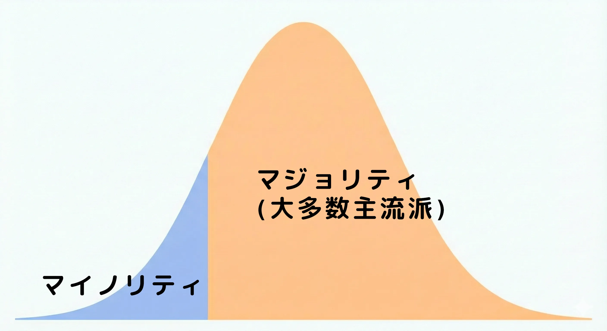

01 月 13 日 ( 月 )
Dive #110 ダイバーとしての個人史 #2 バディについて (4)
【東京出張時の経験 - バディ・システムの崩壊の予兆】
はじめに

いかにも大げさなサブタイトルをつけています。ですが今から考えると予兆どころかすでに崩壊していたのだなと了解できます。
この経験をしたのが NAUI Rescue Technique Specialty は持っていたものの、まだ NAUI Open Water I Diver に過ぎない頃でした。ログブックから引用、再編してお送りします。
端的に言うと図のような経験を大瀬崎、雲見で経験したというお話になります。
この話をすると、今のダイバーは……、と言い始める人がいますが、ちょっと聞いてください。下のグラフを見てください。
図の男性はマジョリティに属します。マイノリティ側では決してありません。バディの存在を意識する人は、圧倒的少数派であり、絶滅危惧種と呼んでもおかしくないのが現実です。
そのようなことになった理由は、複合的な要因がかなり複雑に絡み合った結果生じていると言えます。
ぶっちゃけ、ダイバーの安全のために良かれと思って、いろんな人がいろんなことをやった結果、こうなってしまったということになります。なのでぼく個人としては悪者はどこにもいなくて、ただ全ての歯車が噛み合わなくて、ダイバーを取り巻く生態系全てが破綻したと理解しています。まだそれが目立つようには表面化していないだけだと愚考しています。
ですがそのことは今は置いておきます。ぼくは今このシリーズでぼくの個人史を書いているからです。個人史に話を戻します。以下はぼくのログブックからの転載、再編になります。
また内容は、当時、ぼくはそのように考えたというお話になります。
大瀬崎でのできごと
Date Dive No. Location Start End Max Depth 1992/06/07 (Sun) #46 静岡県沼津市 大瀬崎 一本松 11:50 12:15 26.0m 2 度目の大瀬崎。今回は日帰り。もちろん一介のファンダイバーだった頃の話。
ビーチダイブ。海況は穏やかで、波もほとんどないし、外洋側のポイントなのに流れもほとんどない。天気もいいし絶好のダイビング日より。
最初はみんな落ち着いて潜っていた。でも 15 分か 20 分ほどたってから 1 人足りないことに気がついてしまった。今回のファンダイブグループには、エントリー前に昨夜は明け方まで飲んでて、寝てないという男の子 2 人組がまざっていた。そのうちの 1 人が消えている。
消えた男の子のバディに「君のバディはどこ？どこにいるの？」ってハンドサインを使って尋ねる。でも「さぁ、わかんない」ってハンドサインが返ってくる。マジか？本気で言ってる？と思って、あわててガイド氏のところまでダッシュで泳ぐ。
ガイド氏が何事？という顔をするので、残っている彼を指さして、彼のバディが消えていることをハンドサインで伝える。
すぐに事態を理解したガイド氏が、全員にハンドサインを送って、陸に戻り始める。ぼくはぼくのバディと、1 人残された彼を絶対こいつも危ないやつと思ってマークしながら、エントリーポイントまでもどる。
全員がエグジットしたことを確認したガイド氏は、憔悴した表情で踵を返して 1 人、再度エントリーしていく。このときの彼の気持ちを考えると、今でも胸が締め付けられる。ファンダイブのガイディングをしていると、いや、ガイドでなくてもバディがダイビング中に消えたら、やっぱり、もしかして……、と、最悪の事態がどうしても頭に浮かぶ。しかもそれが自分のバディだったら……背筋が凍る。自分は何をしていたのかと……
とりあえず、ガイド氏の指示通りに、ゴロタのビーチに残された全員を引き連れて荷物をまとめている場所までもどる。
もどると、そこに行方不明になっていた彼がぐったりしたように座り込んでいる。ダイビング中に気分が悪くなって、あわてて 1 人で浮上して、1 人でさっさとエグジットして荷物のところまで戻って休んでいたらしい。
彼がバディに浮上することを伝えてないこともわけがわからなかったし、彼のバディが彼がいなくなっていることに一切無頓着で、ダイビングを楽しみ続けていて、バディでもなんでもないぼくが彼がいないことに最初に気がついて、焦りまくるとか訳がわからなかった。頭がクラクラした。なんなのこの状況？
とにかく彼が無事であることがわかったので、あわててエントリーポイントまで走る。数分待つとガイド氏が憔悴した表情でエグジットしてくる。大きな声で荷物のところにいたよ！！と伝える。そのときのガイド氏の力が抜けたような安堵した表情が忘れられない。
その後、雲見で似たような経験をすることになる。大瀬崎と雲見の経験で、ぼくはカードを取ってからショップツアーに一度も参加せず、ショップとのつながりを断ってスキルや判断力を磨くことも一切なく、バディの安全に無頓着で、個人で好き勝手に潜りに行く人間を性別問わず一切信じなくなる。100 本潜っていると言っていて、実際にログにも 100 本のダイビングが記録されていても、一切信じなくなった。結局一緒に潜ってみないと、その人が大丈夫なダイバーか絶対にわからない、そう思うようになった。
同時にオープンしか持たずに経験さえ重ねればベテランになれると、平気で言いふらす人も一切信用しなくなった。そもそもそんなことが誰でもできると、呑気に信じること自体がかなり危険だ。現実は悲しいことにそうではない。オープンで学んだことすら守れない人が大半だということを無視している。自分の言動を真に受けた人が、安全に潜れるダイバーになるまでに、事故を起こして亡くなってしまったら責任を取れるのだろうか。なぜそんな無責任なことを言う人が出版した Kindle 本がもてはやされてるのか理解に苦しむ。ダイバーが命を失ってからでは遅すぎる。
雲見でのできごと
Date Dive No. Location Start End Max Depth 1992/07/12 (Sun) #48 静岡県松崎町 雲見 赤井浜 11:00 11:38 11.0m 初めての雲見。ビーチダイブ。
IT 企業に勤めていた時の東京長期出張時代、常駐していた客先の若い営業さん意気投合して 1 泊でダイビングに出かけることに。連れて行ってくださいよ、と言われたので、こっち (関東) は大瀬崎くらいしか知らないんだけど、と話したところ、後日彼や彼の友人の希望で伊豆の下田に行くことに。
下田で潜れる！！と内心ワクワクしていました。下田で潜るとなると、やっぱり雑誌で見ていた神子元島とか銭洲とかの言葉が思い浮かぶわけです。
宿にサービスのインストラクターがピックアップにやってくるというので、準備を整えて、車に機材からなにやら積み込んで出発したわけです。港に向かうんだろうな、とワクワクしていたのですが、なんだか車が山の中に入ってく。？？？？どういうこと？
なんだかやたらと長く車に乗っている。どういうこと？と思いながら車窓から外を眺めてインストラクターのお兄さんの話を聞いていたけれども、どこに向かっているのかさっぱりわからない。
車が止まって車から降りると、そこは雲見でした。
だ、だまされた！！ (← 誰もだましてない。そもそも下田で潜るとは誰も言ってない)
お、おれの期待のワクワク感を返せ！！
とはいえ、ダイビング・ポイントまでボートで向かう、というので、機嫌を直す。雲見も地形が楽しいと聞くので、まぁやっぱりワクワクするわけです。しかもなんだかんだで初めてだし。
セッティングを済ませた機材をボートに積み込んで、ダイビングポイントに Go！！
白浜や串本のボートダイビングしか知らないので、まぁ、ボートが沖に向かうものと思いますよね？思うんですよ。南紀をホームにしている人間なら。でも港から出たボートが岸からぜんぜん離れない。離れないどころか、目立たないビーチにどんどん近づいていく。
ど、どういうことですか？ボートダイビングではないのですか？う、牛着岩とかではないのですか？
ボートがビーチに着いて、機材をボートから降ろすように指示がでる。みんなテキパキと自分の機材を降ろしていく。
ど、どういうこと？
そこが赤井浜でした。ボートダイブとちゃうやん！！ビーチやん！！だ、だまされた！！ (← 誰もだましてない)
正直海の印象は薄いです。今ならオープンのコンファインドウォーターに最適とか思ってしまうのですが、当時わたしはまだオープン I の 1 レジャーダイバー。正直これなら白浜の円月島や串本の住崎 (ビーチ) や田子の浦ほうが……と思ってしまいました。関東の人、ごめんなさい。
このダイビングで覚えてることが 2 つあります。
ひとつは、やっぱり強烈でした。女の子が 1 人、ダイビング中に消えてしまったのです。やっぱり最初にそれに気がついたのがぼくで、バディはぜんぜん気がついてない。例のごとくガイドをしているインストラクターの元にダッシュ。なんで関東はこんなダイバーばっかりなの！？
例のごとく、ハンドサインで消えた彼女のバディを指さして、彼女のバディが消えていると伝えるわけです。当然全員浮上してビーチにエグジット。するとやっぱり消えた彼女は、機材やら荷物をまとめていたところに居るわけです。
今日のイントラさんが女の子にどうしたのか？と訊いたら、潜っていて途中で怖くなってしまって浮上して 1 人でエグジットしてしまったとのこと。さすがに今日のイントラさんは、ちょっと怒りながらはっきりと言いました。「オープンで学んだ通り、水面で合流してください。必ずみんなで迎えに行きますから」って。
でも彼女が元気もなくて、叱られてしょんぼりしているのを見て、悟ってしまいました。ぼくがオープンを取って以降、関西では性別を問わず誰もが普通にやってきた、そしてコース基準でできるとされていたオープン同士のバディダイブって、実は普通じゃなかったんだ、簡単なことじゃなかったんだって。世の中のオープンを終えた直後の人は、普通バディダイビングはできない、そのことを悟った最初の 1 本になります。
そのときぼくは彼女を叱責したいとはかけらも思いませんでした。というのは彼女は以前の大瀬崎の彼の場合と違って不摂生のために自らトラブルを招いてバディとチームをほったらかしにしたわけではないからです。理由は訊いていないのでわかりませんが、ただ単にダイビング中に怖くなってしまって、オープンのマニュアル通りにできなかった。ただそれだけのことだったからです。
彼女を見て、この日の 2 本目からは、自分自身がダイビングそのものを楽しむのはもういいや、と思ってファンダイブのメンバーをチェックし続けるように行動を変えました。とは言ってもおかしな行動をする人を見つけたらガイドさんに知らせるだけで、なにをどうやればいいのかわかってなかったのですけど。
この日から、もう少しきちんとファンダイバーの管理を学びたい、こういった人たちをサポートするにはどうすればいいんだろうか、と思い始めました。
大阪に戻ってからすぐに、とりあずはまずは AD から取ることになります。OW I のままでは、お話にならないから、ということになります。もちろん AD も初心者向けコースであることに変わりはなく、それだけでも足りないのは明らかなので、レスキューはすでに取っていたこともあり、そうのうちに、もうインストラクターになるしかないと思い始めるのですが、それはもうちょっと先の話になります。
ダイバー消失事件の他に、もうひとつ覚えているのが、一緒に行った営業職の彼の放った一言。
「映画の彼女が水着に着替えたらみたいに、いろいろ遊べると思ったらぜんぜんなくて、移動するだけでつまんなかった」
いやまぁ、わからないくはないし、あの映画を真似たお店がたくさんあることも知っていましたが、あれってすぐに飽きるんですよね。だからみんなすぐに普通のファンダイブに戻っていく。
あれは映画で、サザンのミス・ブランニュー・デイが流れてて、何日もかけて撮影したカットが編集されて躍動感がでるようにつくられているので、いかにも楽しそうに見えます。ですが水中でグライダーを飛ばすのなんて一瞬で飽きてしまいますし、映画の中のような水中スクーターの使い方をすると、10 人中 10 人が酔ってしまってグロッキー状態になります。しかもあんな長時間水中スクーターを使うと、腕の筋肉がパンパンになって、筋肉ムキムキ人間になるか、通常は翌日以降に筋肉痛で苦しむことになります。
なので、少なくとも関西では、映画の真似をするショップは一瞬で消えて、どのショップも現在の主流となっているダイビングスタイルに戻っていきました。やっぱり映画の真似をしても、ダイビングとしてはとってもつまんないわけです。
どのダイバーもショップも、生物を見たり、写真を撮ったり、地形を楽しむという、普通のスタイルに一瞬で戻っていきました。やっぱり生物とか地形を見てたほうが、いろいろ楽しめちゃうので。
そんな経験により「なんで関東はこんなダイバーはばかりなの？」って書いてますが、大阪に戻ってぼくの師匠の店以外のダイバーを見ると実はまったく同じなのでした。関西もそうだったよママン (涙) って状況で、ぼくやぼくのバディ、ぼくを育ててくれた多くの人たちが、もはやすでに絶滅危惧種と言っていいほどのマイノリティだったことを思い知らされるのでした。
- Category :
- #日記
- #blog
- #スクーバダイビング
- #ダイビング
- #ダイバーとしての個人史
- #バディについて
- #バディ
- #バディ・システム
- #ダイバーとはなにか
- #バディとはなにか